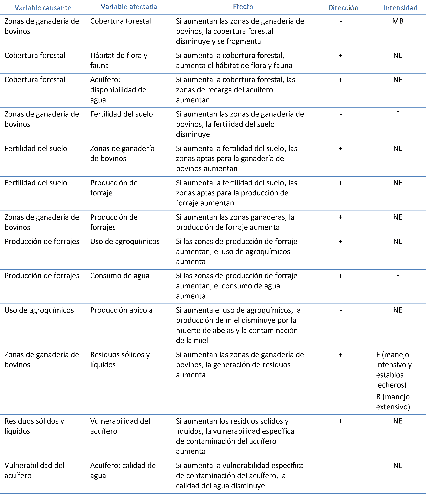

Pecuario bovino¶
Diagrama que representa los efectos del crecimiento de la ganadería de bovinos¶
Variables del diagrama que representan los efectos del crecimiento de la ganadería de bovinos¶
| Variable | Definición | Unidades |
|---|---|---|
| Acuífero: calidad del agua | Índice | Adimensional |
| Acuífero: disponibilidad de agua | Disponibilidad Media Anual de Agua Subterránea | Hectómetros cúbicos |
| Calidad del aire | Índice | Adimensional |
| Cobertura forestal | Superficie con cobertura forestal | Hectáreas |
| Consumo de agua | Consumo promedio de agua para consumo ganadero | Litros o metros cúbicos |
| Fertilidad del suelo | Suelo apto para la producción de biomasa | Hectáreas |
| Hábitat de flora y fauna | Superficie total del hábitat interior de parches de vegetación natural | Hectáreas |
| Inversión | Programas de fomento gubernamentales o inversión de los productores | Pesos |
| Producción apícola | Producción de miel | Toneladas |
| Producción de forrajes | Zonas de pastizal inducido y agricultura tecnificada para producción de granos | Hectáreas |
| Residuos sólidos y líquidos | Excretas y aguas residuales | Toneladas y metros cúbicos |
| Uso de agroquímicos | Superficie cultivada con aplicación de fertilizantes | Hectáreas |
| Vulnerabilidad del acuífero | Superficie de acuífero con vulnerabilidad alta a la contaminación | Hectáreas |
| Zonas de ganadería de bovinos | Número de cabezas de ganado | Número de animales |
Interacciones del diagrama que representa los efectos del crecimiento de la ganadería de bovinos¶
